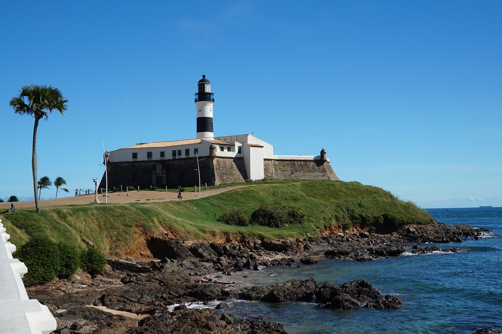
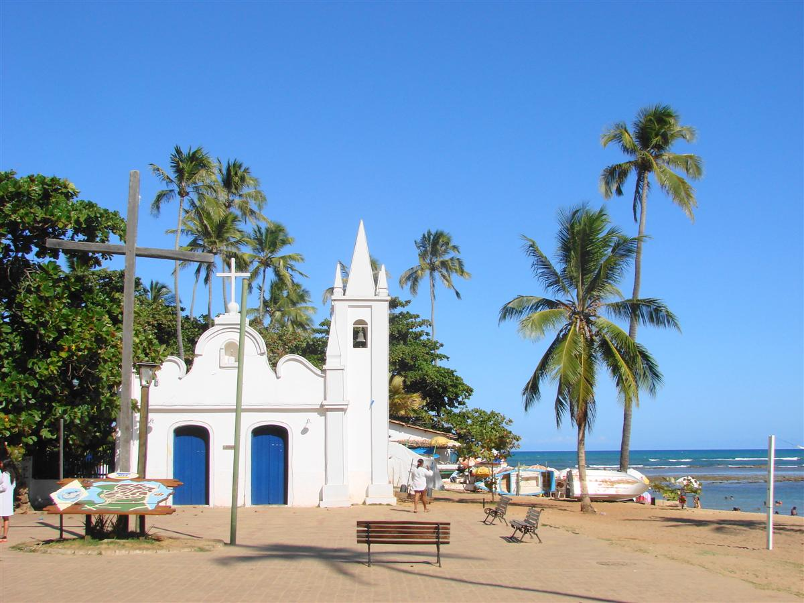

Salvador, Bahia em
Pelourinho (ou carinhosamente, Pelô!)

As ruas de paralelepípedo contam com bares de caipirinha ao ar livre, lojas de souvenirs afro-baianos e praças cheias de músicos e dançarinos no histórico Pelourinho. Os pontos turísticos coloniais incluem a Igreja e Convento de São Francisco e a Catedral Basílica de Salvador, com azulejos portugueses e esculturas intrincadas banhadas a ouro. A Casa do Carnaval mostra exposições multimídia e fantasias da icônica festa de rua.
Curtiu? Acompanhe mais fotos desse local maravilhoso no Google ou clique em saiba mais para mais informações no Wikipédia.
Farol da Barra
Ou Farol de Santo Antônio, localiza-se na antiga ponta do Padrão, atual Ponta de Santo Antônio, em Salvador no bairro da Barra. Foi o primeiro sistema de sinalização náutica a entrar em operação nas Américas. E hoje é um dos pontos turísticos mais conhecido de Salvador.
Segue uma lista com os melhores bares e restaurante dessa região. Clique aqui
Praia do Forte
Quer um lugar mais calmo para relaxar e aproveitar mais a vinda a Salvador?! Então, não pode deixar de ir à Praia do Forte, um local que fica apenas 80km de distância da capital.
Ficou interessado?! Acesse o site Praia do Forte, onde encontrará informações onde se hospedar e os melhores restaurantes.
Parte do livro "HTML5 e CSS3: Domine a web do futuro."